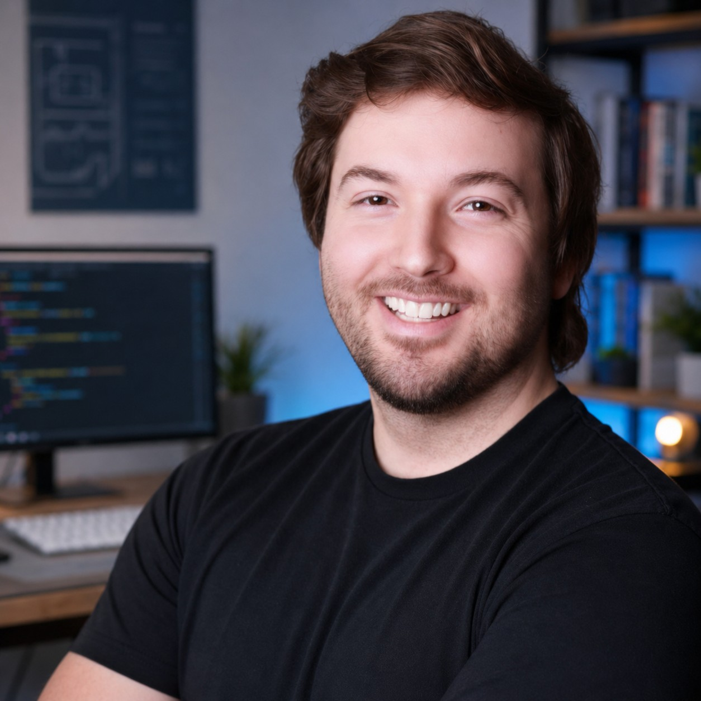

About
Hi, I’m Dillon.
I’m a software engineer, game designer, and SDET based in Irvine, CA. I build applications, create game experiences, and develop automation that helps teams ship with confidence.

My work across World of Warcraft and Diablo IV at Blizzard Entertainment brought together testing, automation, and design. That experience shapes how I build tools and products, thinking through edge cases, making problems easier to diagnose, and paying attention to how a system feels to the person using it. I enjoy both the technical and creative sides of development, from backend tools and test frameworks, to gameplay systems, content, class, and level design.
In the workplace I always lead with an empathetic and supportive approach, looking for as many ways to empower my team as possible while keeping the energy positive and forward thinking. I help our team find cracks, avoid pitfalls, and optimize the foundation of the software or the design so that it's scalable. The process in how I think is roughly the same for each skill specialty I have, and is what has been taught to me by mentors who've been in the industry for 20+ years. I love to learn and am teachable, and strive my best to pass down my knowledge and mentor those who are up and coming as well.
Outside of team projects, I’m usually building a game, experimenting with a tool, or making an addon for something I’m playing. I like learning by making things, sharing what I discover, and working with people who care about their craft!
Thanks for stopping by,
Dillon